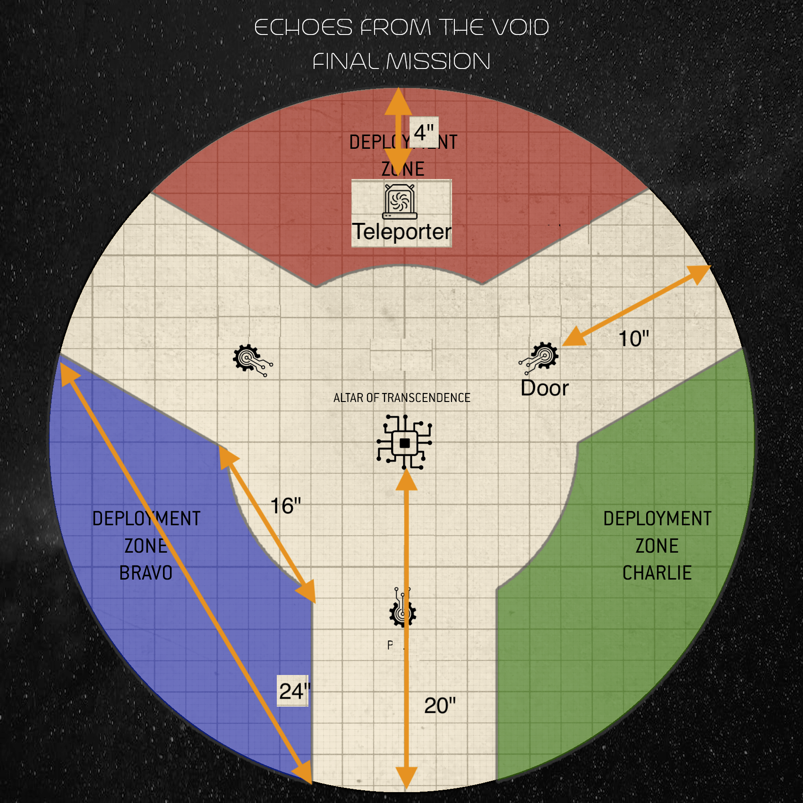

TELEPORTATION IN PROGRESS PLEASE EVACUATE LANDING ZONE
I knew, in time, my watch would end.
Starved for the warmth of another.
Starved for the taste of bread.
Starved for life unbound.
I welcome my release of duty.
- The Watchman
MISSION BRIEFING
This is a three player game
This mission is played on a 38" circular battlefield. Reference the deployment zone image below.
BOARD SETUP
- Place a large ring at the center of a 44x60 board
- Place a small ring at the center of the large ring Remove this ring at the start of the first turn
- Place the Altar of Transcendence in the center of the battlefield.
- Place Transcendental Door objective marker (3 total) 10" away from the Altar of Transcendence, spaced equally apart in a circle.
- Place Teleporter transponder 4" from the inner edge of the outer ring in the center of each deployment zone
- Place a large blocking terrain piece between each deployment zone (Terrain Piece 1)

CLICK HERE FOR DETAILS
MISSION RULES
BALANCE THE SCALES:
Before the start of the game determine the total experience of each players Order of Battle. The player with the highest amount of experience starts the battle with 0 CP. The player with the second highest starts with 50% of their normal CP (round up). The lowest player starts with their normal amount of CP.
The team who won +1 CP from Planetary Control receives +2 Command Points at the beginning of every turn.
ARRIVAL IN THE SANCTUM: Each player brings a 500 battle-forged army. Players list are defined by Warzone Nephilim OR Arks of Omen. This means detachments can be Arks of Omen Detachment, or any other previously legal detachment from this crusade. This army must be built from a players order of battle. Each player should roll a single D6, using any bonuses from Attacker/Defender received throughout the campaign. The winning dice roll chooses one of three deployment zones located on the circular battlefield. The second highest chooses from the remaining two deployment zones. The last faction receives the remaining deployment zone.
CONTINUED ARRIVAL: Starting round 2, each player may deploy 125 points worth of units from their order of battle wholly within 3" of the teleporter as strategic reserves. Any points not spent in a players return are retained until spent.
Each time a unit from your army arrives from Strategic Reserves, you can choose to set it up anywhere that is wholly within 3" of the teleporter in your deployment zone. If you do so can be set up within Engagement Range of enemy models. If a unit is set up within Engagement Range of any enemy models in this way, it counts as having made a charge move this turn (Overwatch attacks cannot be made against that unit), and until the end of the turn, that unit can target any enemy unit it is within Engagement Range of with melee attacks, even though it did not declare a charge this turn.
If a unit arrives and is unable to deploy within 3" due to enemy models and or friendly models, models must be removed from within 3" of the teleporter until the unit arriving is able to deploy. If only enemy models are blocking teleporting into battle, the player that controls those models chooses which to remove to make a space large enough to allow for teleportation. If multiple players are blocking the teleporter roll 1d2 or 1d3 (depending on number of players blocking) and assign numbers to players, the number rolled is which player removes models to allow deployment. If deployment space is not achieved continue rolling for player removing models, and remove models until enough space has been created.
DISRUPTED SPACETIME: (Aura) The reality around the Altar of Transcendence is warped and chaotic, pulsing irregularly throughout the battle 10" away. By interacting with the Transcendental Door in various ways, the Altar of Transcendence will discharge warp energies onto the battlefield.
ECHO CHARGING: All doors at the beginning of the battle have zero Echo Charge Counters. There are three ways a door can be Charged to activate DISRUPTED SPACETIME. Charges last until discharged. Doors cannot be destroyed. Doors stats are Strength 8, Toughness 9, 7+ Save, Leadership 20, and have the Fortification keyword. You may charge a door in the charge phase, but the model only considered to be engaged for the purposes of rolling fight phase attacks. No other rules apply for being engaged in combat.
- Receives 6 Mortal Wounds from Psychic Abilities in a single psychic phase: +1 Echo Charge (once per turn).
- Receives 10 damage in a single shooting phase: +1 Echo Charge (once per turn).
- Receives 10 damage in a single fight phase: +1 Echo Charge (once per turn).
Echo Charges carry over between turns, but are removed when the DISCHARGE DOOR action is completed. Doors are considered enemy units for the purpose of abilities that affect the closest enemy model. Each door has a separate count of Echo Charges.
DISCHARGE DOOR (Action): Select from the following two variations of this action to perform:
- (Action) The Void Defends: At the end of your movement phase, a unit can start to perform this action if within 3" of any door. This action completes at the end of your turn. Remove all charges from the door. Deal 1 mortal wound for each Echo Charge removed to all enemy units affected by DISRUPTED SPACETIME.
- (Action) The Void Returns: At the end of your movement phase, a unit can start to perform this action if within 3" of any door. This action completes at the end of your turn. Remove all charges from the door. One model in each friendly unit from your army affected by DISRUPTED SPACETIME can regain up to XD3 lost wounds, where X is the number of Echo Charges removed from the door. If every model in that unit has a Wounds characteristic of 1, that unit can instead be replenished. When a unit is replenished, you can return XD3 destroyed models to that unit with their full wounds remaining, where X is the number of Echo Charges removed from the door. Each returned model no longer counts as having been destroyed for the purposes of Morale tests this turn.
Vox Shroud: Units must deploy wholly within their deployment zones, even if they have an ability that allows them to set up elsewhere. If a unit can move after deployment but before the first turn begins, it must end that move wholly within your deployment zone. Any time a unit is set up on the battlefield, either because it is arriving from Strategic Reserves or Reinforcements or it has been affected by a rule that instructs you to remove the unit and set it back up on the battlefield, it must be set up wholly within your own deployment zone.
Terrain Piece 1These large Ruins terrain pieces all fall into the Area Terrain category and have the Scalable, Breachable, Light Cover, Defensible, and Obscuring traits.
Details:
- Points: 500 + 125 per turn (2-5)
- Board Size: Circle
- CUSTOM SEE Above
Setup & Play:
v20230125
1. DETERMINE MISSION
There is one mission.
2. Place Terrain and objectives
See above
3. Objectives & Agendas
Primary Objectives
PEER INTO THE VOID (Progressive): Score 10 Victory Points if your faction controls the Altar of Transcendence at the end of your turn.
OFFERS TO THE VOID (Progressive): Score 1 Victory point for each enemy unit your faction destroys affected by DISRUPTED SPACETIME. Mortal wounds inflicted by discharging doors, when performed by your faction, count as having been destroyed by your faction.
ECHOES FROM THE VOID (Progressive): Score 2 Victory Points for each Echo Charge your faction discharged from a door.
Agendas
No agendas are used this game.
4. Choose Deployment Zone
See ARRIVAL IN THE SANCTUM above.
5. Declare Reserves and Transports
Vox Shroud: Units must deploy wholly within their deployment zones, even if they have an ability that allows them to set up elsewhere. If a unit can move after deployment but before the first turn begins, it must end that move wholly within your deployment zone. Any time a unit is set up on the battlefield, either because it is arriving from Strategic Reserves or Reinforcements or it has been affected by a rule that instructs you to remove the unit and set it back up on the battlefield, it must be set up wholly within your own deployment zone.
6. Deploy Armies
The players alternate setting up their remaining units one at a time, starting with the Defender.
Refer to Ark of Omen for additional details
7. Determine First Turn
Unless the mission briefing says otherwise, the players roll off. The winner takes the first turn.
9. Resolve Pre-battle Abilities
Players alternate resolving any pre-battle abilities units in their army may have, and resolving any Stratagems that are used before the battle, starting with the player who will take the first turn. Remember that Crusade forces can only make use of Stratagems that upgrade units by using Requisition points. Vox Shroud remains in effect.
10. Begin the Battle
The first battle round begins. Players continue to resolve battle rounds until the battle ends.
11. Determine Victor
Primary Objectives
At the end of the battle, the player with the most victory points is the winner. If players are tied, the battle is a draw.
Agendas
Determine agenda scoring per the rules for your army
Victory Bonus
After the battle, the victor can select one unit from their army that has been teleported from the battlefield in the battle (you must select a unit that can gain Battle Honours) - that unit gains one Battle Trait of your choice after the battle (make a note on the unit's Crusade card and increase its Crusade points accordingly).
12. Update Crusade Cards
The players must now update their Crusade cards for all the units they used in the battle
Refer to Crusade rules for additional details
13. Update Order of Battle
Refer to Crusade rules for additional details
CRUSADE WINNER
The faction with the most planetary control points wins the Echoes from the Void campaign, and chooses the fate of the Colony.